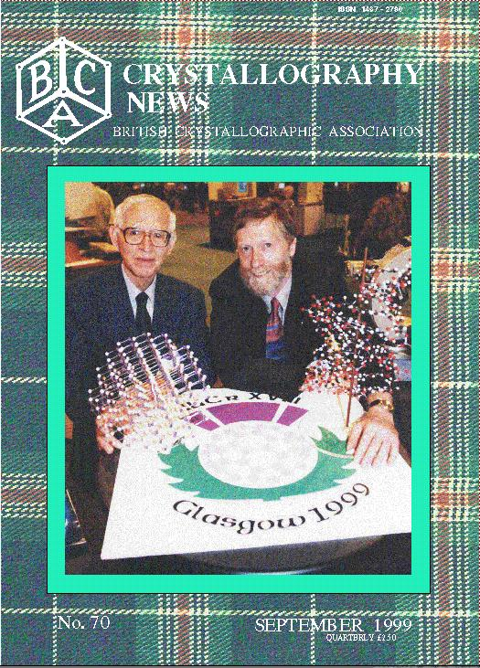

cover story 
FROM THE PRESIDENT remarks p 2
FROM THE SECRETARYFROM THE BCA GROUPS
NEWS and VIEWS
EDUCATION, COURSES and AWARDS
MEETING REPORTS
FORTHCOMING MEETINGS
EDITORIALS
Sept Competition
, results of June one,
ISSN, new name for website 62 -63
INDEX OF ADVERTISERS and NEXT ISSUE 64
 Click here to return to BCA homepage
Click here to return to BCA homepage